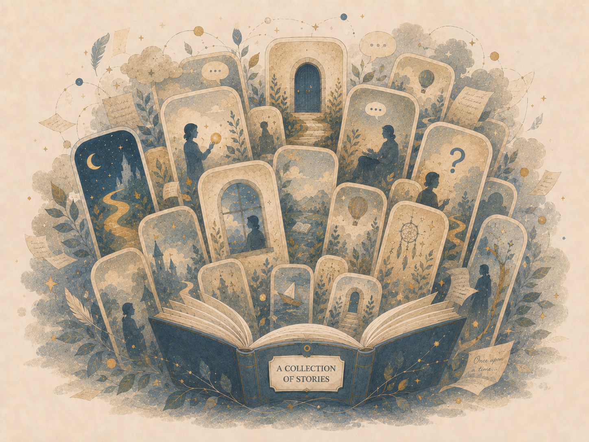

סיפורים לפני המחשבה
סיפורים שסיפרתי לאימי לפני השינה
נספחים ספרותיים לתאוריה, מתורגמים ומעוצבים לשתי השפות.
Stories I Told My Mother Before Sleep — literary appendices to the theory, translated and designed across both languages.

סיפורים שסיפרתי לאימי לפני השינה
נספחים ספרותיים לתאוריה, מתורגמים ומעוצבים לשתי השפות.
Stories I Told My Mother Before Sleep — literary appendices to the theory, translated and designed across both languages.
